Tahun Ajaran 2026/2027
SMK Wiraguna Limbangan membentuk siswa yang kompeten di bidang keahliannya dan matang secara karakter, dengan guru yang mendampingi setiap langkah.
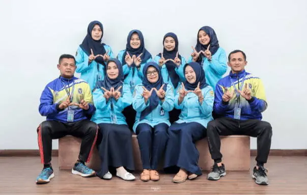
Profil Sekolah
Berdiri sejak 1998, SMK Wiraguna Limbangan memulai perjalanannya sebagai sekolah rintisan dengan tiga rombongan belajar. Kini kami tumbuh menjadi sekolah kejuruan dengan jaringan alumni yang tersebar di berbagai dunia industri dan dunia kerja.
Kurikulum dirancang untuk menyeimbangkan penguasaan kompetensi keahlian dengan pembentukan karakter, didukung program praktik kerja lapangan dan bimbingan konseling yang aktif mendampingi setiap siswa.
Fasilitas belajar mencakup bengkel praktik, laboratorium komputer, perpustakaan, serta lapangan olahraga yang terbuka untuk kegiatan intrakurikuler maupun ekstrakurikuler.
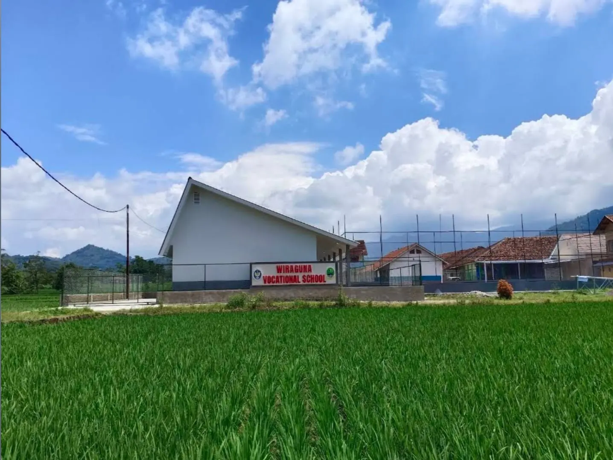
Visi
Menjadi sekolah kejuruan yang melahirkan lulusan kompeten, berintegritas, dan siap bersaing di dunia industri maupun dunia kerja.
Misi
Menyelenggarakan pembelajaran berbasis kompetensi, membina karakter melalui keteladanan, serta membuka ruang bagi setiap siswa untuk mengembangkan potensinya.
Para Staf
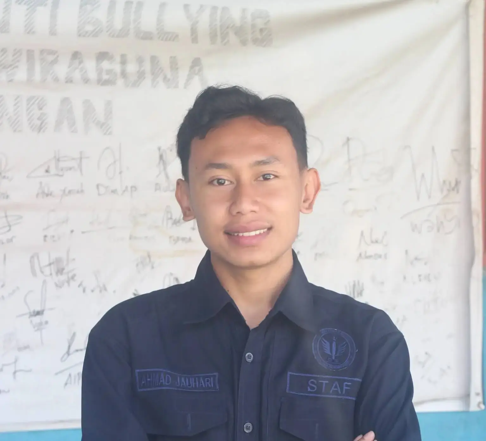
Geser ke samping untuk melihat staf lainnya.
Berita & Pengumuman
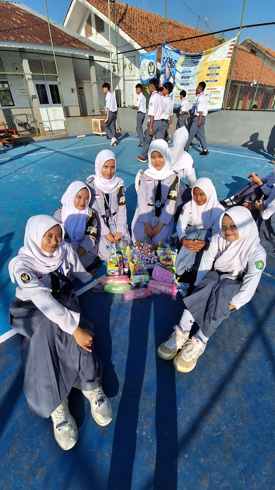
Perayaan yang diikuti oleh seluruh siswa dalam menyambut hari kemerdekaan indonesia dengan berbagai lomba dan pembagian hadiah.
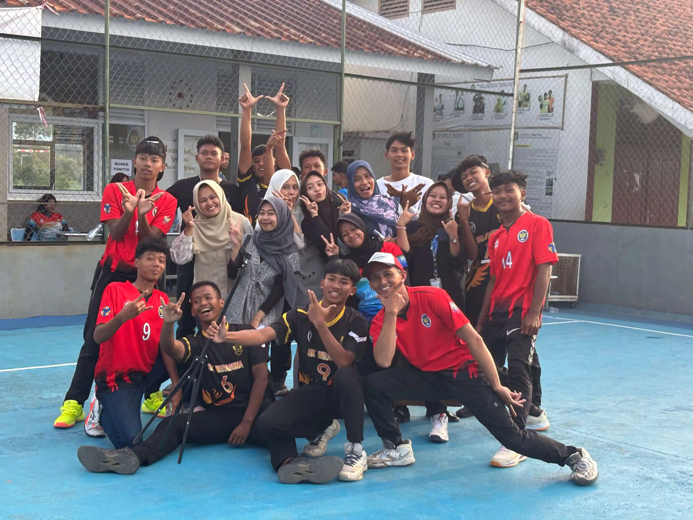
Sekolah mengadakan turnamen volly yang diikuti oleh banyak smp.
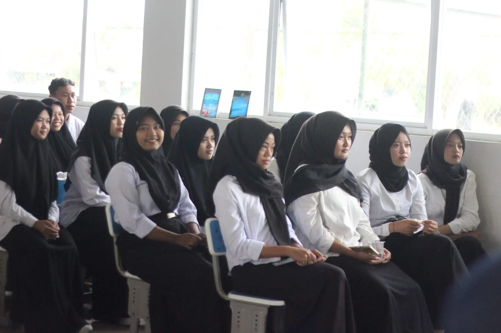
Rangkaian kegiatan kelulusan sekolah bagi siswa kelas 12 yang telah selesai dilaksanakan dengan lancar dan meriah.
Galeri
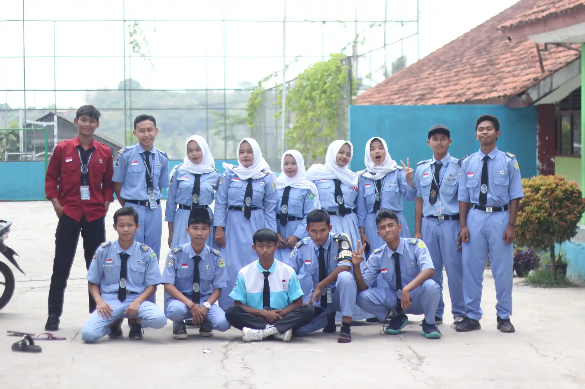
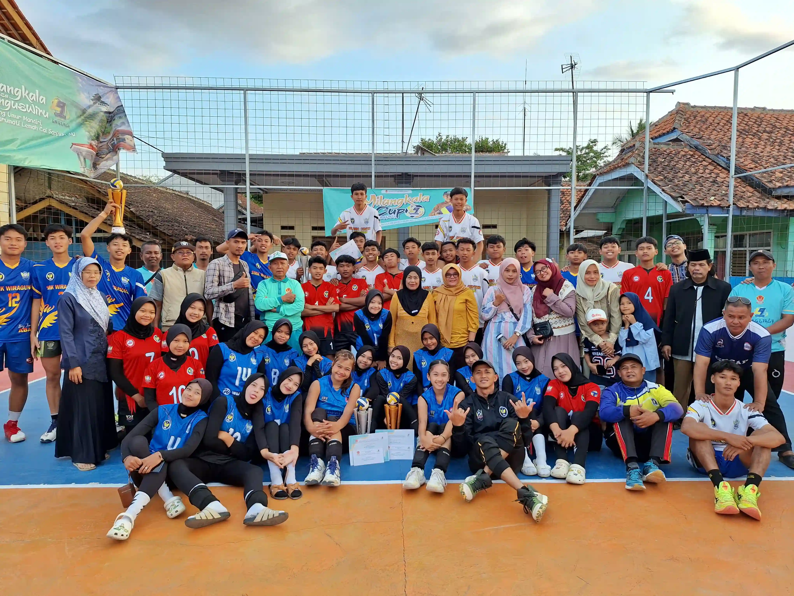
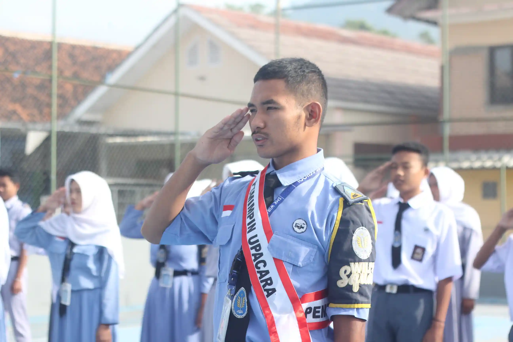
Kontak & Lokasi
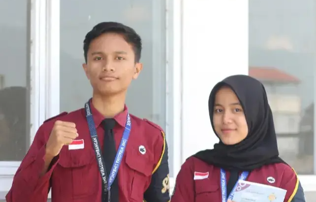
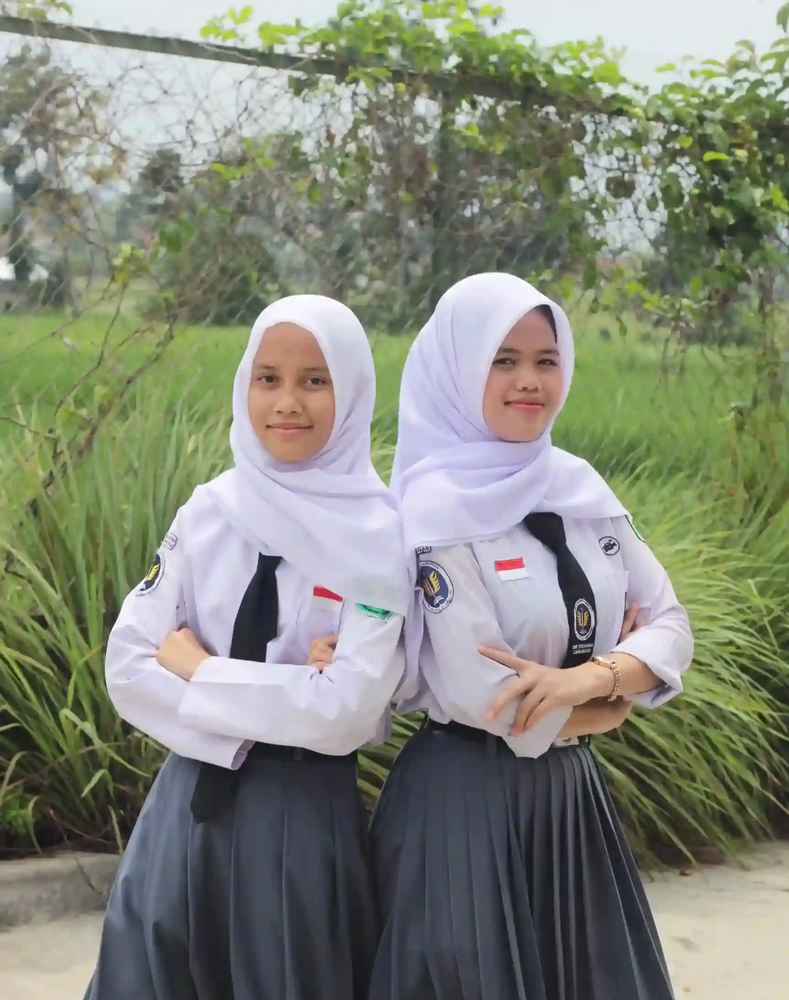
Panduan Siswa
Baca ketentuan lengkap mengenai kedisiplinan, seragam, dan aturan kegiatan belajar mengajar di SMK Wiraguna Limbangan.
Lihat Tata Tertib ↗